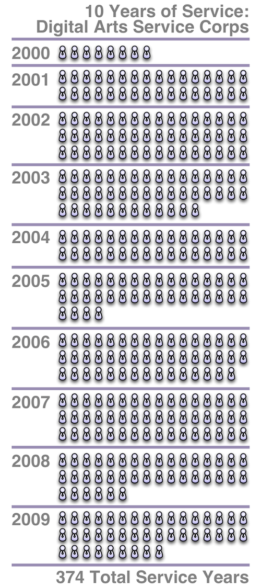
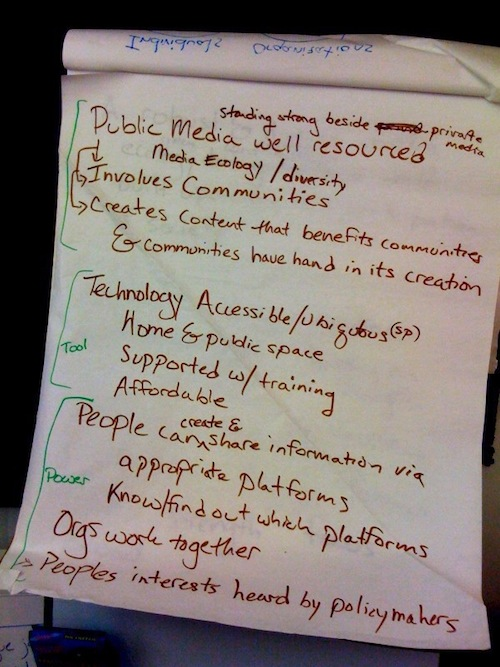

Journalism's Digital Transition: Unique Legal Challenges and Opportunities
When:
April 9, 2010
Where:
Cambridge, MA
Website:
http://www.omln.org/conference The Berkman Center’s Citizen Media Law Project and Cyberlaw Clinic are pleased to announce a one-day symposium and CLE program to celebrate the launch of the Online Media Legal Network (OMLN). OMLN is a legal referral service that connects qualifying online journalism ventures and digital media creators with lawyers willing to provide legal services on a pro bono or reduced-fee basis. It supports promising ventures and innovative thinkers in online and digital media by providing access to legal help that would otherwise be unavailable.
Agenda
The program will bring together panels of academics, legal practitioners, and journalists. Topics include the legal issues arising from news aggregation and managing online communities, as well as the question of what comes next for journalism, and how the legal profession can assist (or hinder) journalism’s digital transition.
Registration
Cost for the conference is $275 ($225 if registration is received by March 31), which includes all CLE/course materials and lunch. A “sponsors dinner” will be held at the Harvard Faculty Club. Cost for the dinner is $150. A portion of the registration fee will go towards supporting the Citizen Media Law Project and the Online Media Legal Network.
Sponsors of the conference are entitled to a limited number of complimentary registrations to the conference and dinner. For information on becoming a sponsor, please contact Kimberley Isbell at kisbell [at] cyber.law.harvard.edu.
We also have reserved a limited number of free and reduced-fee registrations that will be made available to academics, students, and public interest attorneys. Please contact Kimberley Isbell at kisbell [at] cyber.law.harvard.edu to register.
FCC Workshop: Public and Other Noncommercial Media in the Digital Era
When:
April 30, 2010
Where:
Washington, DC As part of its project on the Future of Media and the Information Needs of Communities, the workshop will focus on:
- The current structures and activities of public and other noncommercial media entities, as well as relevant government policies;
- The ways in which public and other noncommercial media entities do and could contribute to the information needs of communities across multiple platforms, focusing in particular on journalism, cultural, and educational content;
- The possibilities for greater collaboration among noncommercial media entities such as public broadcasters, PEG channels, noncommercial web-based outlets, and other new media entities;
- The role of public and other noncommercial media in serving the information needs of the underserved, including language minorities, ethnic minorities, children, the disabled, and the economically disadvantaged;
- The infrastructure needs and assets of public and other noncommercial media in delivering information to communities;
- Innovative uses of social media, gaming, Internet applications, citizen journalism, mobile technologies, and other technological and organizational innovations; and
- The possibilities for new kinds of noncommercial media networks and associated funding models.
Visualizing 10 years of impact

Yesterday we posted an infographic showing all of the service members we’ve placed. Since our focus is on building the capacity of organizations that use media and technology to strengthen communities, it’s equally important (if not more) to chart out all of the nonprofits and institutions we’ve placed Digital Arts Service Corps (and CTC VISTA before it) members over our 10 year history. (160 organizations is a tough fit, so you can download this visual as a full-sized PDF for easier reading.)
| Attachment | Size |
|---|---|
| Transmission Project - Size and Scope Infographic.pdf | 254.38 KB |
Visualizing 10 years of service

First as the CTC VISTA Project, and now the Digital Arts Service Corps, the Transmission Project has run a media and technology national service program for over 10 years. One of unique pieces of the Digital Arts Service Corps—compared to other national service initiatives—is our focus upon capacity building: building and strengthening the institutions and organizations that serve communities (that’s why the people wear ties, not cameras, in the graphic above). This produces a sustained impact upon a community’s ability to learn, use and innovate with media and technology long after a service member’s year of service has completed.
Digital Literacy Corps Resource Roundup

The newly proposed Digital Literacy Corps—part of the FCC’s National Broadband Plan recommendations—has been a source of pride for us: a recognition of the importance of our 10 years of service through the Digital Arts Service Corps and the CTC VISTA Project before it. Of course, back then we were trying to get folks on dialup… nothing has changed but the speeds.
Here are some recommendations and articles on the role national service can play in connecting and strengthening communities:
- National Broadband Plan: Recommendation 9.3: Creating a Digital Literacy Corps.
Some Corps members might be based out of urban schools where they could work with teachers, staff and administrators to create digital literacy lesson plans and integrate digital skills into the teaching of other subjects. Other members might work with broader social service programs to provide digital literacy training as part of a workforce development program. Still other members could incorporate demonstration projects into training activities in rural areas to show the relevance of broadband technology to rural non-adopters and to encourage people to invest time in digital skills training.
Corps members will help non-adopters overcome discomfort with technology and fears of getting online while also helping people become more comfortable with content and applications that are of immediate and individual relevance. For example, Corps members might help people research health information, seek employment, manage finances and engage with or utilize government services.
- Knight Commission on the Information Needs of Communities in a Democracy: Recommendation #12.
Imagine a “Geek Corps for Local Democracy” where, as a post-college opportunity, American youth volunteer to help connect a physical community to the networked infrastructure. They would be assigned to diverse communities to help local government officials, librarians, police, teachers, and other community leaders leverage networked technology. Geek Corps participants would teach community members how to use technology. They would help local leaders to understand technological shifts and how they can leverage new technologies for community practices. Participants from all the communities involved would be connected into a national network of participants to share best practices, develop collectively usable code, and build a network of information systems for local democracy.
- Huffington Post: A Plan to Connect All Americans to the Digital World:
Like the Peace Corps and AmeriCorps, the Digital Literacy Corps will recruit youth and adults as volunteers to work in underserved communities, helping people get connected – not only to broadband, but to the educational and economic resources that broadband can bring to the next generation of Americans.”
- Computerworld: FCC to propose national digital literacy corps:
The National Digital Literacy Corps, modeled after other volunteer programs like AmeriCorps, will target communities with low numbers of broadband subscribers, including low-income housing developments, rural areas and tribal lands, said Mignon Clyburn, a member of the FCC, speaking Tuesday during a conference on the digital divide in Washington.
“The Digital Literacy Corps will mobilize hundreds of digital ambassadors in local communities across the country,” she said. “This is about neighbors helping neighbors get online.”
Some other proposed, existing and just-launched programs based upon a service model:
- National Black Programming Consortium: Public Media Corps: “Creating engaged communities, for a networked world”
- Community Technology Empowerment Project: “helping youth and adults use technology to better access social, civic, educational and economic opportunities.”
- OneCommunity: Connect Your Community: “charged with increasing broadband awareness, teaching basic skills related to broadband technology, and stimulating household adoption of broadband.” (BTOP Fact Sheet)
Heard on the call: BTOP on MADCo
Last week I spoke on the Media and Democracy Coalition’s bi-weekly teleconference about the BTOP data gathering and research I’ve been doing. Chance Williams did a great writeup on it in MADCO’s newsletter today:
The Transmission Project’s Ben Sheldon has closely monitored grants awarded by the NTIA for the Broadband Technology Opportunities Program (BTOP) and collected interesting data. Ben shared his analysis of the awards process and the types of projects being funded (or not).
Back in November, the lack of clear information coming out about the BTOP program prompted the Transmission Project’s Ben Sheldon to take on a “side project” to do some analysis of the data. The result has been a great resource that Ben and the Transmission Project have shared with all of us that sheds light on the BTOP process.
Ben didn’t begin with a research question, but by looking at poverty, inclusion and engagement he discovered data that tells an interesting story. There were a number of public private partnerships, the size and scope of most funded projects was pretty unassuming, and of the 2200 applications received 1100 received at least one challenge.
Does the FCC share our vision?

We’re thrilled the the FCC is unveiling the National Broadband Plan today. While reading through the executive summary, we were happy to discover similarities between the FCC’s proposed impact and our vision. The vision of the Transmission Project is a robust and diverse media ecology enabling a world built upon the full participation of society. From the FCC, under the heading of “Government performance and civic engagement” the plan includes recommendations to:
Increase civic engagement by making government more open and transparent, creating a robust public media ecosystem and modernizing the democratic process.
The FCC also shares our programs too: proposing a Digital Literacy Corps similar to our Digital Arts Service Corps. Needless to say, we’re excited!
(The visioning flipcharrts are from our archives.)

Our response to the FCC's National Broadband Plan
The Transmission Project congratulates the Federal Communications Commission today on its formal release of a National Broadband Plan. We honor the Commission for its planning approach, making sure that voices inside and outside of Washington D.C. were included in the process using a range of media, including in-person conversation.
The emphasis on creating value, improving care, and maximizing consumer welfare in an environment where connectivity is presumed and expected represents a dramatic shift in perspective for the Commission and is to be lauded. Capitalizing on available resources and opportunities such as wireless backhaul spectrum, “dig once” policies, and existing community institutions and programs working to increase civic engagement is indeed the most efficient path forward towards reaching the goals set forth.
We do hope that greater emphasis and clarity will develop in the strategies to ensure affordability to low-income Americans and support them in adoption. The proposed National Digital Literacy Corps, much like The Transmission Project’s own Digital Arts Service Corps, is an important tool to support not only individual skill development, but also to strengthen organizations and schools to increase civic engagement and create content for the constituencies that trust them in their communities.
With the launch of the National Broadband Plan, some believe that the hard work is just beginning. In the field we know that the hard work continues and that this Plan will help to lay a foundation for renewed support of this work.
| Attachment | Size |
|---|---|
| NBP statement.pdf | 467.32 KB |
The Politics Online Conference
When:
April 19, 2010 - April 20, 2010
Where:
Washington, DC
Website:
http://polc2010.com A number of people have been asking me lately, “what can I get out of the conference?” It’s a great question, with a simple answer. If you work in any sector of politics or advocacy, the Politics Online Conference is going to show you how technology and the internet is being used to raise money, build relationships, cultivate contacts, build organizations, increase communication, and much more. In short, the conference will show you how you can use technology to be more effective and more efficient.
If you already work with state of the art tools, the Politics Online Conference will bring you together with your peers in DC, and with some of the brightest minds from New York, California, Texas and more.
We have two main goals for this conference. First, bring in the nation’s brightest new media practitioners to show and teach conference participants how to use new media to better their organizations and their skills. And second, to bring in innovative people from outside the beltway to infuse new ideas into the realm of politics and technology.
In order to make it easy for you to figure out where you fit in, we organized the conference in tracks that can be viewed here.
The Future of Journalism: Unpacking the Rhetoric
When:
April 29, 2010 - April 30, 2010
Where:
Stanford, CA April 29, 2010 - April 30, 2010
Thursday 4/29 Kick-off event: 7:30 p.m. - 9:30 p.m.
Friday 4/30 sessions: 9:00 a.m. - 5:15 p.m.
Sponsored by The Center for Internet and Society
This conference is designed to challenge and dissect the fundamental assumptions and biases embedded within the media debate. The event will bring together journalists, lawyers, scholars, technologists, and policymakers to analyze and discuss the evolution of journalism into the digital age.
The format of this conference will consist of a Thursday evening Kick-off event with Amy Goodman, host of Democracy Now!, followed on Friday by four panels, each addressing one of the tenets of conventional wisdom on the media. Panels will open with a talk supporting a specific principle. The panel members will then question, analyze, and debate the speaker’s thesis in an effort to introduce complexity and substance into the national dialogue about the future of journalism.
VISIT THE EVENT WEBSITE to view the full agenda, list of speakers and more information.
This event is free and open to the public. Please note, registration is required for the Friday 4/30 sessions. No need to register for the Thursday 4/29 Kick-off event, but please show up early to ensure your seat.